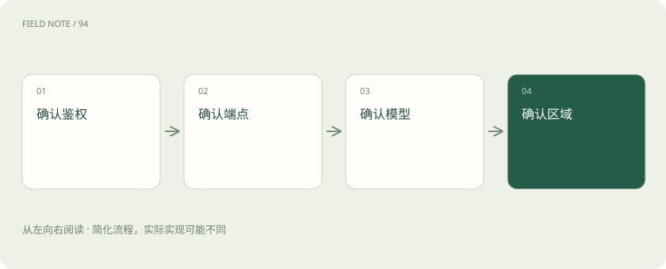
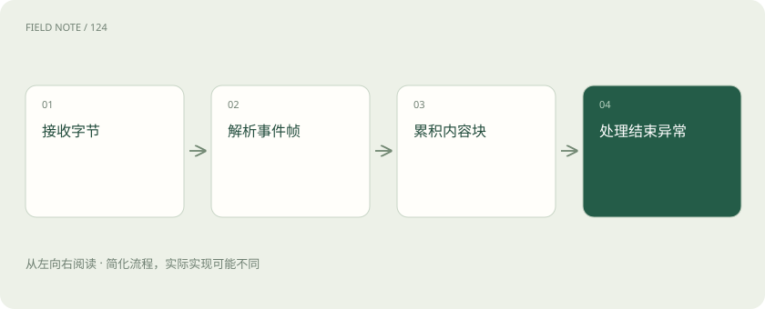

先读哪些知识
先用一个类比理解
类比只帮助建立直觉，不等同于技术的完整机制。
一图看懂
先把平台与协议族分开
Amazon Bedrock是模型托管与推理平台，平台名并不等于一种消息协议。阅读接入说明时，先识别调用的是哪一种运行时API，再识别承载它的服务端点。AWS当前兼容性页列出Invoke、Converse、OpenAI兼容和Messages四个族；其中OpenAI兼容族又包括Chat Completions与Responses。只记住早期的Converse和InvokeModel会漏掉正式提供的新入口。
这些名称描述不同的交互承诺，不能把它们当作同一JSON的别名。统一聊天、多轮状态、提供商原生格式、异步任务与双向流分别解决不同问题。选型先写明需要模型完成的工作，再寻找受支持的API组合，避免被熟悉的SDK名称牵着走。
Converse统一的是会话结构
Converse与ConverseStream面向支持消息交互的模型，提供共同的消息、内容块、推理配置和工具交互结构。统一层让应用能够沿用一套会话管理思路，但不保证每个模型拥有相同的图像输入、工具选择、推理或缓存能力。模型附加参数仍可能通过扩展字段传递，接入时需要保留能力差异。
Converse并不是替应用永久保存所有聊天历史的承诺。应用应知道本轮发送了哪些消息，工具结果如何与工具请求对应，以及上下文超限时由谁裁剪。切换模型前检查输入类型与限制，尤其不要因为文本成功，就推断图片和工具也成功。
Invoke保留提供商原生载荷
InvokeModel把模型标识与请求体分开：外层承担AWS调用，body遵循具体模型的原生推理格式。不同提供商对消息、提示词、采样设置和返回字段的定义可以不同。因而使用InvokeModel不能把一个模型的body原封不动发给另一个模型，也不能只替换modelId便宣布完成迁移。
原生访问适合需要明确控制模型特性的场景，也要求维护格式适配。图像、嵌入、异步生成等任务未必适合会话统一层。应记录模型版本、内容类型和输出解释方式；未知字段不能随意丢弃，因为它可能承载结束原因、拒绝信息或计量线索。
图解：接入四项交集

端点决定兼容接口的边界
AWS当前推荐新应用考虑bedrock-runtime端点；它提供Converse、Invoke以及相应兼容接口。bedrock-mantle也提供Responses、Chat Completions和Messages路径，但二者的能力不完全相同。官方APIs页面特别说明runtime上的Responses请求同步执行且没有服务端工具，而mantle的Responses面向包含服务端工具和异步推理等需求。
因此“支持Responses”不足以决定部署。要核对API族、端点、模型、区域以及工具和状态能力的交集。Messages在runtime文档中通过InvokeModel使用原生格式，在mantle上则有Anthropic原生接口入口；名称相似不代表路径、鉴权和错误封装可以混用。
鉴权不再只有签名一种路径
AWS官方端点比较表明确列出，bedrock-runtime和bedrock-mantle都支持AWS SigV4与Bedrock API key鉴权。因此不能把两个端点区分成“签名专用”和“密钥专用”。API key采用Bearer路径，并区分短期与长期类型；具体操作仍要核对支持范围，例如官方API key参考列出的双向流调用限制。
身份验证和资源授权是两件事。无论采用哪种凭据，关联IAM主体都需要相应权限。runtime按推理目标及相关项目检查bedrock:InvokeModel，流式另涉及bedrock:InvokeModelWithResponseStream；mantle使用bedrock-mantle:CreateInference。切换端点时应重新核对动作、资源与区域，不能将凭据有效当作目标模型已经获准。
流式传输必须先解帧再解释事件
ConverseStream及InvokeModelWithResponseStream使用AWS EventStream承载事件，不能按逐行SSE文本直接读取。传输帧的边界、事件类型和载荷解码属于第一步，模型内容块的累积和结束判断属于第二步。网络读取到一段字节既不代表一个完整事件，也不代表一句完整文字。
适配到SSE客户端时需要语义转换，而不是给每段二进制前面添加data。工具参数片段必须关联正确内容块，文本结束与消息结束必须区分，异常事件也应进入明确的失败路径。兼容接口自身可能使用不同流规范，不能把AWS原生流的解析器按平台名复用到所有端点。
错误和usage应按具体响应定位
排障先区分网络失败、鉴权拒绝、模型或区域不支持、配额限制、参数验证与生成中断。HTTP成功建立流以后仍可能收到流内异常；只检查初始状态码会把失败标成完成。重试也应考虑工具是否产生外部动作以及客户端是否已经接收到部分输出，不能对所有失败无限重复。
计量字段同样不应强行拉平。Converse普通响应有自己的usage结构，流式计量可能出现在metadata事件；Invoke原生body和兼容API则按各自规范返回。记录输入、输出、缓存等字段时保留来源与缺失状态，缺字段不能直接算零，更不能把不同语义的总量相加后作为账单事实。
图解：流适配次序

用能力清单完成一次教学选型
教学案例：团队要建设支持工具的客服助手，先列文本会话、工具回执、区域驻留和费用追踪四项需求，再逐项核对候选模型与端点。如果应用自己执行工具，Converse统一层可能足够；如果明确依赖Responses服务端工具，则需要核查mantle对应能力，而不能在runtime成功返回文本后就结束验收。
这不是实际跑分或生产验证结论。版本边界以2026年11月5日查阅的官方页面为准，模型清单和区域会变化。上线评审保留页面链接、查询日期、模型标识、端点及能力结果；后续变更只需重新检查受影响的格子，才能把兼容性从印象变成可复核记录。
放在一起对比
| 边界 | 承诺 | 核验对象 |
|---|---|---|
| Converse | 统一消息结构 | 模型特性与消息类型 |
| InvokeModel | 提供商原生body | 具体模型输入输出 |
| runtime Responses | 同步且无服务端工具 | 目标区域与模型 |
| mantle Responses | 包含服务端工具等能力 | 工具与异步支持范围 |
放进真实场景
教学案例：客服助手需要应用侧工具调用，先验收Converse的调用与回执；新增服务端搜索需求后，重新检查mantle Responses，而不沿用原验收结论。
别踩这个误区
想一想
runtime和mantle都接受同一种鉴权方式，为什么切换端点仍可能被拒绝？
身份验证只确认调用身份；两个端点的IAM动作与资源授权要求不同，还须核对模型、区域和目标操作。
关联阅读
资料与边界
本文为原创知识讲解。类比和图示经过简化；示例数字不代表实测或报价。整理日期：2026-11-05。文末列出对应技术的原始资料，具体功能与版本支持请以原文为准。
按完整目录逐篇阅读